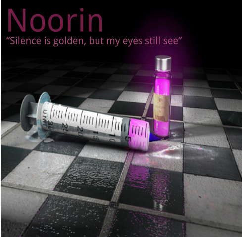

Design a Band Challenge
Challenge Information
- - In our challenge we are creating a band by using design thinking which is a process people use to create solutions to complex problems. The reason why we study this is because it encourages more creativity and gives better solutions that meets with people's needs.
- - Our DEEP design thinking process includes empathy which is to understand what people might be thinking. Secondly, based off what you empathize you create a point of view so you know what the people need. Then, we use our creativity to create many solutions as possible. After that, we create a prototype/rough draft of one of our ideas. Finally, we produce the idea.
- - The first thing we did with our design thinking was to empathize with our classmates by surveying them on what they like. We ask questions such as what color and font they like. After we surveyed them, we put all the things they want together to see what the problem is on what they need. After seeing what people need, I start thinking of ideas on what they want. In my case, many people liked the color purple, sans font, and abstract art. Then, I create a rough draft which is on a google doc to show my idea. Finally, I produce the idea by placing it up on c9.
Album Cover
Noorin was a band was created by a person named Justin Patton raised in San Francisco who enjoyed rock music. Justin suffered from cancer, having to take treatment in order to cure him. He was cured, however the treatment also caused him to lose some of his memories including the memories of the music he enjoyed. Eventually, he met with a person named Roger Manning, a guitarist that played music that helped Justin remember his joy for rock music. Inspired by Roger, Justin started to create his own band by sharing musical interests between them. Playing some songs, the unnamed band eventually became a bit more popular. As the the band continue to develop, they finally became one of the mainstream bands and named themselves Noorin.
Roger Manning was a person who lived in San Jose. Roger's mom got into a car accident due to having a seizure while driving and was sent to a hospital. With that, Roger moved to San Francisco to visit his mom. The next few days, she died from the injuries of the car accident. For Roger to escape from the tradegy of his mom's death, he played music with his guitar.